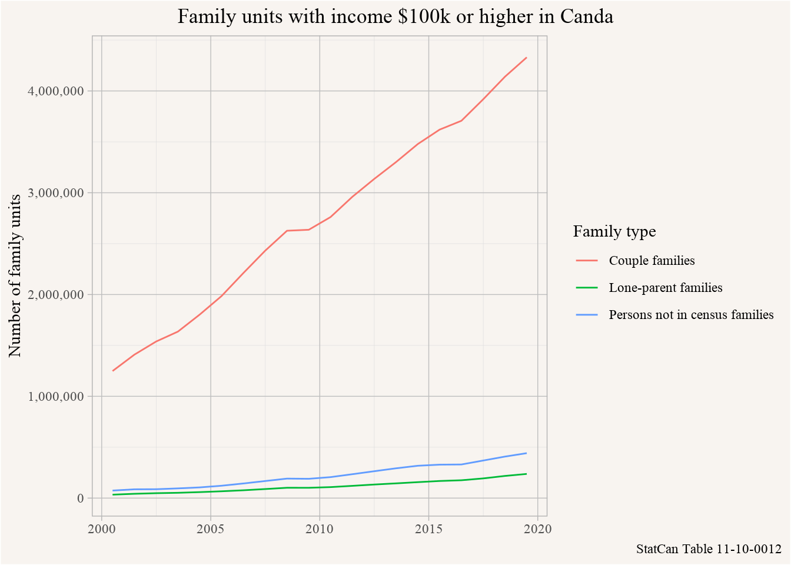
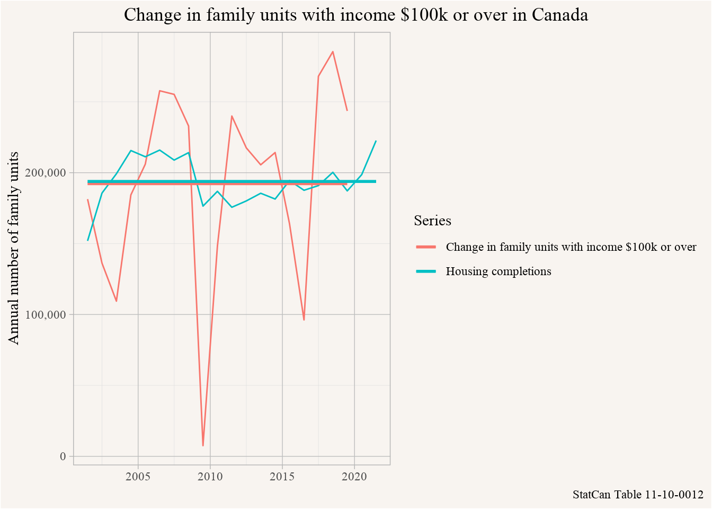
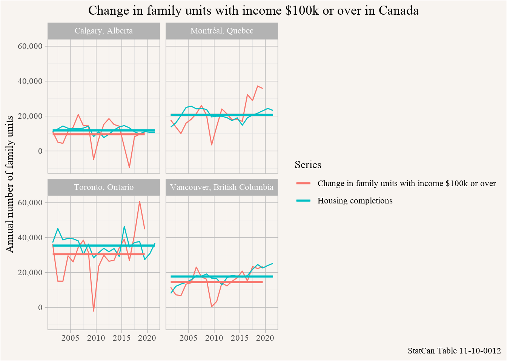
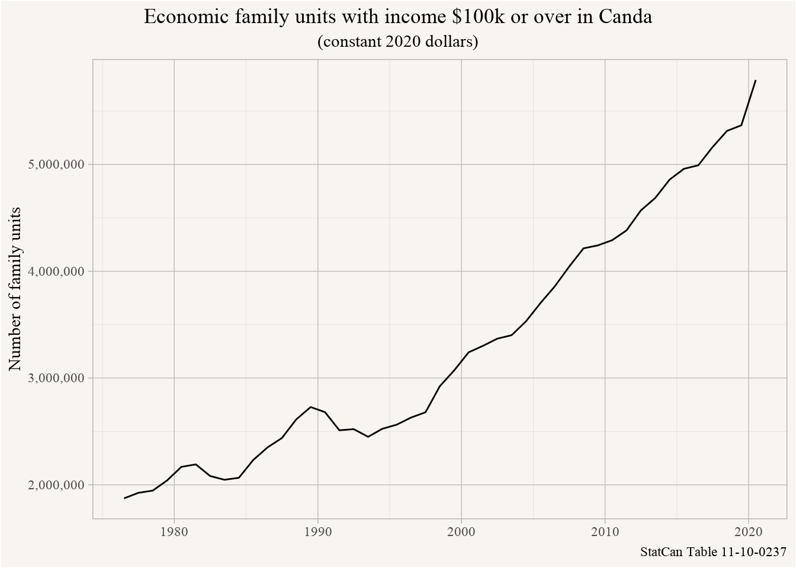

Before we get into this we want to think for a moment [what a household is](https://doodles.mountainmath.ca/blog/2017/12/01/what-s-a-household/), by definition [a household is an occupied dwelling unit](https://www12.statcan.gc.ca/census-recensement/2021/ref/dict/az/definition-eng.cfm?ID=households-menage014). While households is the right unit of analysis if we are thinking about how lives in housing, households aren’t quite the right unit if we are interesting in how people make decisions about housing. Take a hypothetical roommate household that is getting evicted. They won’t necessarily look for housing together, some individual household members might find new accommodation on their own, others might move back in with parents for a while and some others might join up and form a new roommate household, possibly with additional people that weren’t part of the original roommate household.
What is a better unit when we are interested in groups making housing decisions together? Either economic or census family units, and unattached individuals, generally will make housing decisions together. Also, what’s the logic behind the $100k cutoff? Comparing this to new housing, the basic idea is that these family units should be able to afford new housing, is $100k going to cut it? Or should we go a bit higher in the Canadian context, using Canadian dollars? Based on this, we will ask the following question.
Question
What’s the ratio of net new family units making $150k or more vs the number of new dwelling units in Canada each year?
Data sources and data acquisition
In Canada we have two main sources of annual income data for family units. One is the Canadian Income Survey that surveys people on their income situation, the other is T1FF data derived directly from annual tax filings. Both of these report on regular income only, so they exclude sporadic income like capital gains, which is increasingly becoming a problem in under-estimating the income of wealthier families, and is especially problematic in the context of housing where lifetime earnings, including sporadic income, plays an important role.
The Canadian Income Survey is more up-to-date than CRA tax data, but less accurate. On the upside, the CIS data is adjusted for inflation, so if we want to look at longer time series this matters, $100k was worth a lot more several decades ago than it is today. It also costs more to build housing today than it did several decades ago, so if we want to take income of $100k or more as a very rough proxy for “being able to afford new housing”, then we should work with inflation-adjusted income.
To make things simple we will settle for CRA tax data. To locate the data we can search the web for StatCan tables or use the built-in search function from the {cansim} package. We are looking for income data that includes the distribution of income (so we can filter by income of $100k and over), and we know that we should be looking in the T1FF or Canadian Income Survey data, and we are looking for fairly recent data.
library(dplyr)library(tidyr)library(ggplot2)library(cansim)list_cansim_cubes() %>%filter(grepl("income",cubeTitleEn,ignore.case =TRUE),grepl("distribution",cubeTitleEn,ignore.case =TRUE), cubeEndDate>="2019-01-01",grepl("T1 Family File|Canadian Income Survey",surveyEn)) |>select(cansim_table_number,cubeTitleEn,surveyEn,cubeEndDate) |> knitr::kable()
cansim_table_number
cubeTitleEn
surveyEn
cubeEndDate
11-10-0012
Distribution of total income by census family type and age of older partner, parent or individual
Annual Income Estimates for Census Families and Individuals (T1 Family File)
2019-01-01
11-10-0237
Distribution of market, total and after-tax income by economic family type, Canada, provinces and selected census metropolitan areas (CMAs)
Survey of Consumer Finances; Survey of Labour and Income Dynamics; Canadian Income Survey
2020-01-01
11-10-0238
Distribution of market, total and after-tax income of individuals, Canada, provinces and selected census metropolitan areas
Survey of Consumer Finances; Survey of Labour and Income Dynamics; Canadian Income Survey
2020-01-01
11-10-0240
Distribution of employment income of individuals by sex and work activity, Canada, provinces and selected census metropolitan areas
Canadian Income Survey
2020-01-01
Looking at the results it seems that Table 11-10-0012 based on T1FF data and Table 11-10-0237 from the Canadian Income Survey might have what we need. We can inspect it on the web interface via view_cansim_webpage("11-10-0012") or just download the table and take a look.
It’s a larger table that updates only once a year and we expect we might use more frequently, so we opt to cache it on our machine as an SQLite database using the get_cansim_sqlite function. This works the same way as using the get_cansim function, except that we need to call collect_and_normalize to extract the data from the database. One added advantage of this approach is that we can filter directly on the database before collecting the data, increasing speed and reducing the memory footprint.
Here we are interested in data for all of Canada, families of any age group, and the number of family units with income above $150k.
income_data <-get_cansim_sqlite("11-10-0012") |>filter(GEO=="Canada",`Age of older adult`=="Total all ages",`Family income`=="$100,000 and over") |>collect_and_normalize(disconnect =TRUE) |>select(Date,`Family type`,VALUE)
We make a quick plot to inspect the data.
ggplot(income_data,aes(x=Date,y=VALUE,colour=`Family type`)) +geom_line() +scale_y_continuous(labels=scales::comma) +labs(title="Family units with income $100k or higher in Canda",y="Number of family units", x=NULL,caption="StatCan Table 11-10-0012")

Next we need to get the number of new housing units in Canada. CMHC has the annual number of completions, we can source this either directly from CMHC or via the tables published through StatCan. The latter is the easier option in this case. To locate the table we can search the web for “StatCan housing completions” or search via the {cansim} package. We are only interested in tables that have recent data.
Canada Mortgage and Housing Corporation, housing starts, under construction and completions, all areas, annual
2021-01-01
34-10-0135
Canada Mortgage and Housing Corporation, housing starts, under construction and completions, all areas, quarterly
2022-01-01
There is a wide variety of tables, we will go with Table 34-10-0126 which has annual data for all areas of Canada. We are interested in completions of any type of housing unit in Canada.
completions_data <-get_cansim("34-10-0126") |>filter(GEO=="Canada",`Type of unit`=="Total units",`Housing estimates`=="Housing completions")ggplot(completions_data,aes(x=Date,y=VALUE)) +geom_line() +scale_y_continuous(labels=scales::comma) +labs(title="Housing completions in Canada",y="Annual number of units",x=NULL,caption="StatCan Table 34-10-0126")
This looks good, we have all the data we need.
Data preparation
The annual new dwelling data needs no further data preparation, they are just our completions. But for the income data we need to compute the annual change in family units with income above $100k. Here we don’t really care if the family unit is a couple family, lone parent family or unattached individual, so we will lump them all together and compute the year over year change. Computing year over year change is a common type of data manipulation, if we have complete data for all years as we do in this case the easiest way to do this is to subtract values lagged by one year.
income_change <- income_data |>group_by(Date) |>summarise(VALUE=sum(VALUE),.groups="drop") |>mutate(Change=VALUE-lag(VALUE,order_by = Date)) |>filter(!is.na(Change))ggplot(income_change,aes(x=Date,y=Change)) +geom_line() +scale_y_continuous(labels=scales::comma) +labs(title="Change in family units with income $100k or over in Canada",y="Annual number of family units", x=NULL,caption="StatCan Table 11-10-0012")
This looks good, time to put the two series together.
bind_rows(income_change |>select(Date,Value=Change) |>mutate(Series="Change in family units with income $100k or over"), completions_data |>filter(Date>=min(income_change$Date)) |>select(Date,Value=VALUE) |>mutate(Series="Housing completions")) |>ggplot(aes(x=Date,y=Value,colour=Series)) +geom_line() +geom_smooth(method="lm",formula = y~1, se=FALSE) +scale_y_continuous(labels=scales::comma) +labs(title="Change in family units with income $100k or over in Canada",y="Annual number of family units", x=NULL,caption="StatCan Table 11-10-0012")

This shows that in Canada overall completions line up quite well with the change in the number of family units with income of $100k or higher.
income_data <-get_cansim_sqlite("11-10-0012") |>filter(GEO %in%c("Vancouver, British Columbia","Toronto, Ontario","Montréal, Quebec","Calgary, Alberta"),`Age of older adult`=="Total all ages",`Family income`=="$100,000 and over") |>collect_and_normalize(disconnect =TRUE) |>select(GeoUID,GEO,Date,`Family type`,VALUE)income_change <- income_data |>group_by(Date,GeoUID,GEO) |>summarise(VALUE=sum(VALUE),.groups="drop") |>group_by(GeoUID) |>mutate(Change=VALUE-lag(VALUE,order_by = Date)) |>filter(!is.na(Change))completions_data <-get_cansim("34-10-0134") |>filter(GEO %in%c("Vancouver, British Columbia","Toronto, Ontario","Montréal, Quebec","Calgary, Alberta"),`Type of unit`=="Total units",`Housing estimates`=="Housing completions")bind_rows(income_change |>select(Date,GEO,GeoUID,Value=Change) |>mutate(Series="Change in family units with income $100k or over"), completions_data |>filter(Date>=min(income_change$Date)) |>select(Date,GEO,GeoUID,Value=VALUE) |>mutate(Series="Housing completions")) |>ggplot(aes(x=Date,y=Value,colour=Series)) +geom_line() +geom_smooth(method="lm",formula = y~1, se=FALSE) +scale_y_continuous(labels=scales::comma) +facet_wrap(~GEO) +labs(title="Change in family units with income $100k or over in Canada",y="Annual number of family units", x=NULL,caption="StatCan Table 11-10-0012")

cis_data <-get_cansim_sqlite("11-10-0237") |>filter(GEO=="Canada",`Income concept`=="Total income",`Economic family type`=="Economic families and persons not in an economic family", Statistics %in%c("Number of families","$100,000 and over")) |>collect_and_normalize(disconnect =TRUE) |>select(Date,Statistics,val_norm) |>pivot_wider(names_from=Statistics,values_from=val_norm) |>mutate(Value=`Number of families`*`$100,000 and over`)ggplot(cis_data,aes(x=Date,y=Value)) +geom_line() +scale_y_continuous(labels=scales::comma) +labs(title="Economic family units with income $100k or over in Canda",subtitle ="(constant 2020 dollars)",y="Number of family units",x=NULL,caption="StatCan Table 11-10-0237")

cis_income_change <- cis_data |>mutate(Change=Value-lag(Value,order_by = Date)) |>filter(!is.na(Change))bind_rows(cis_income_change |>select(Date,Value=Change) |>mutate(Series="Change in family units with income $150k or over"), completions_data |>filter(Date>=min(cis_income_change$Date)) |>select(Date,Value=VALUE) |>mutate(Series="Housing completions")) |>ggplot(aes(x=Date,y=Value,colour=Series)) +geom_line() +geom_smooth(method="lm",formula = y~1, se=FALSE) +scale_y_continuous(labels=scales::comma) +labs(title="Change in family units with income $150k or over in Canada",y="Annual number of family units", x=NULL,caption="StatCan Table 11-10-0012")